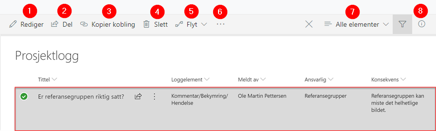
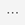
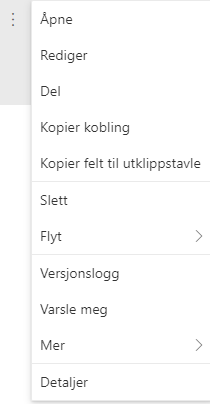

De fleste av prosjektverktøyene består av SharePoint-lister som er tilpasset ulike formål. I listene er det en del fellesnevnere som er verdt å lære seg for å gjøre det enklere å arbeide med dem.
I Prosjektportalen omfatter disse Prosjektlogg, Interessentregister, Kommunikasjonsplan, Usikkerhet, Dokumenter, Fasesjekkliste, Endringsanalyse, Gevinstanalyse og gevinstrealiseringsplan, Måleindikatorer, Gevinstoppfølging, Prosjektleveranser og Ressursallokering.
Merk at hvert element har egne felter (kolonner), avhengig av informasjonen som er relevant for den lista. Redigering; legge til, slette eller endre oppføring i listene er lik for alle. Det vil si at når du har lært deg å redigere en liste kan du benytte deg av samme metode for de andre listene.
Menyene tilpasser seg det du gjør, så ved å markere en oppføring i en liste får du andre menyvalg enn hvis den ikke er markert.
I bildet under har vi markert et element i prosjektloggen. Da endrer menyen seg til å gjelde endringer i oppføringen som du har valgt:

Når du har valgt et element i en liste kan du høyre-klikke på elementets tittel eller trykke på ellipsemenyen  for å velge hva du vil gjøre med elementet.
Hvilke handlinger som kan velges i ellipsemenyen bestemmes av hva slags element du har valgt. Derfor vil tilgjengelige valg være avhengig av hva slags liste, og hva slags element, du jobber med.

| Åpne | Elementet åpnes i sidemenyen (lesemodus) |
| Rediger | Elementet åpnes i sidemenyen (redigeringsmodus) |
| Del | Del det merkede elementer med andre personer |
| Kopier kobling | Få en kobling for å dele adressen til elementet |
| Kopier felt til utklippstavle | Hvis du skal kopiere inn innholdet i feltet et annet sted |
| Slett | Slett det valgte elementet |
| Flyt | Aksjoner knyttet til Flyt på det aktuelle elementet |
| Versjonslogg | Viser versjonsloggen for elementet |
| Varsle meg | Sett opp varsel på elementet |
| Mer | Øvrige handlinger som er mulige for dette elementet |
| Detaljer | Åpner egenskapsfeltet for elementet i sidemenyen |
Når du har valgt et dokument i et bibliotek kan du høyreklikke på dokumentets tittel, eller trykke på ellipsemenyen for å velge hva du vil gjøre med dokumentet.

| Åpne | Dokumentet åpnes i sidemenyen (lesemodus) |
| Forhåndsvis | Viser hvordan dokumentet ser ut |
| Del | Del det merkede dokumentet med andre personer |
| Kopier kobling | Få en kobling som andre kan bruke for å få tilgang til dokumentet |
| Lagre til senere | Du kan markere dokumentet for gjenfinning |
| Last ned | Last ned en kopi av dokumentet til din lokale maskin |
| Slett | Slett det valgte dokumentet |
| Flyt | Aksjoner knyttet til Flyt på det aktuelle elementet |
| Gi nytt navn | Endre navnet på dokumentet |
| Fest til toppen | Dokumentet markeres for visning som flis over biblioteket |
| Flytt til | Du kan flytte dokumentet til en annen plassering |
| Kopier til | En kopi av dokumentet kan opprettes på en annen plassering |
| Versjonslogg | Viser versjonsloggen for dokumentet |
| Varsle meg | Sett opp varsel på dette dokumentet |
| Mer | Øvrige handlinger som er mulige for dette dokumentet |
| Last ned som PDF | Dokumentet lastes ned til lokal maskin og blir lagret i .pdf format |
| Lagre som PDF | En kopi av dokumentet i .pdf-format blir lagret i biblioteket |
| Detaljer | Åpner egenskapsfeltet for dokumentet i sidemenyen |